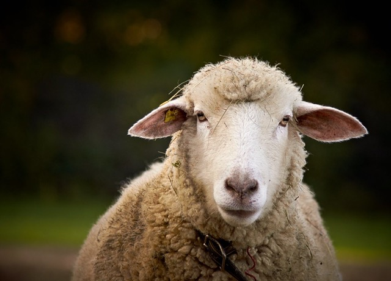

Dolly's Story

Dolly comes to us from a grazing farm in New Zealand. She is a pure breed dorper. She was born in tragedy, when her mother passed away giving birth. The farm's owner did not have the facilities for weaning and that is where we stepped in for the rescue.
We welcome you to stop by:
- Our pets are safe and people friendly
- Bring the whole family
- Cuddle up with a new pet friend!